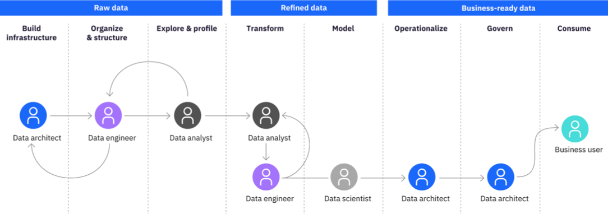
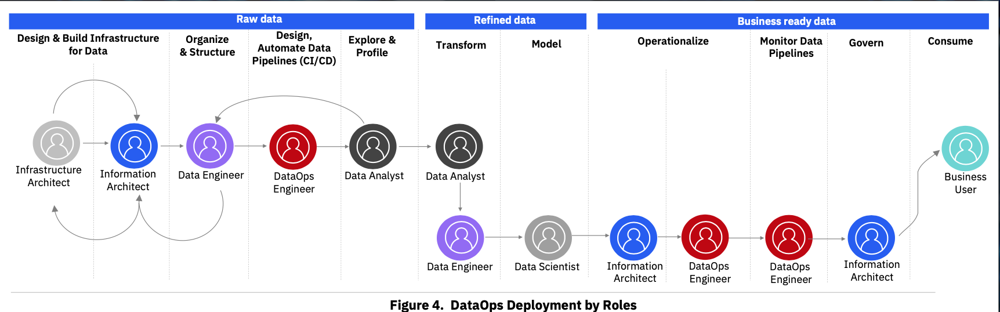
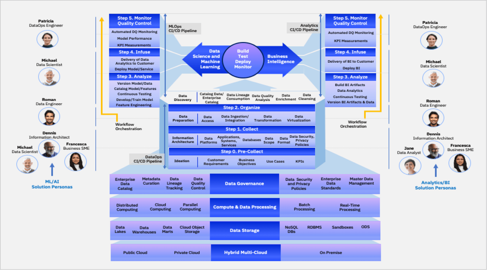

|
DATAOPS AND PROJECT MANAGEMENT
- R PROJECT MANAGEMENT
- R Project management Notes
- R Project management Links
- DATAOPS
- DataOps overview
- DevOps overview
- DataOps links
DataOps Roles


- RAW DATA
- 1)design and build infrastructure
- infrastructure architect | information architect
- 2)lead and organize
- 3)design data pipeline
- 4)data discovery
- data scientist | data analyst
- TRANSFORM DATA
- 5)data preperation
- 6)model
- data scientist | data analyst
- BUSINESS READY DATA
- 7)operationalize
- dataops engineer | information architect
- 8)monitor
- 9)consume
- => end user
DataOps Framework

back home
|